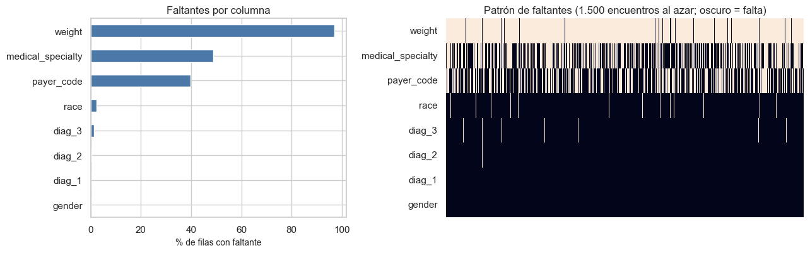

2. La base de datos: tamaño, calidad y representatividad#
Este capítulo caracteriza los datos de entrenamiento antes de analizarlos: tamaño, casos por clase, entidades independientes, valores faltantes (patrón y mecanismo), duplicados, valores atípicos e inconsistentes, sesgos de muestreo y ética.
from pathlib import Path
import re, sys, warnings
import numpy as np
import pandas as pd
import matplotlib.pyplot as plt
import seaborn as sns
from IPython.display import Markdown, display
project_root = Path.cwd().resolve()
while not (project_root / "_config.yml").exists():
if project_root.parent == project_root:
raise FileNotFoundError("No se encontró _config.yml. Ejecuta el notebook dentro de la carpeta del libro.")
project_root = project_root.parent
if str(project_root) not in sys.path:
sys.path.insert(0, str(project_root))
for _folder in ("tables", "figures"): # se crean si no existen
(project_root / _folder).mkdir(exist_ok=True)
from src.project_utils import *
configure_plots()
pd.set_option("display.max_columns", 80)
pd.set_option("display.width", 170)
pd.set_option("display.max_colwidth", 70)
TABLES = project_root / "tables"
def md_out(text):
display(Markdown(text))
Diccionario de datos#
La tabla contiene una fila por variable con tipo observado, significado
documentado, unidad o naturaleza del código, valores/categorías, cantidad de
faltantes y papel dentro del análisis. Los identificadores y objetivos se
distinguen explícitamente de las predictoras. Cuando una variable no tiene
unidad física se reporta no aplica, código o conteo, sin inventar unidades.
train = load_train()
dic = build_dictionary(train)
dic.to_csv(TABLES / "diccionario_datos.csv", index=False)
dic
| variable | tipo | significado | unidad | valores_o_categorías | faltantes | faltantes_% | papel | |
|---|---|---|---|---|---|---|---|---|
| 0 | encounter_id | identificador | Identificador único del encuentro | no aplica | rango observado: 12522 a 443867222 | 0 | 0.00 | identificador; excluido del modelo |
| 1 | patient_nbr | entidad | Identificador del paciente (varios encuentros por paciente) | no aplica | rango observado: 378 a 189481478 | 0 | 0.00 | grupo de paciente; excluido del modelo |
| 2 | race | categórica nominal | Raza reportada | no aplica | AfricanAmerican, Asian, Caucasian, Hispanic, Other | 1798 | 2.21 | predictora candidata |
| 3 | gender | categórica nominal | Sexo | no aplica | Female, Male | 2 | 0.00 | predictora candidata |
| 4 | age | categórica ordinal | Rango de edad en décadas | años (rangos de 10 años) | [0-10), [10-20), [20-30), [30-40), [40-50), [50-60), [60-70), [70-... | 0 | 0.00 | predictora candidata |
| 5 | weight | categórica ordinal | Peso en libras (rangos) | libras (rangos) | >200, [0-25), [100-125), [125-150), [150-175), [175-200), [25-50),... | 78886 | 96.90 | predictora candidata |
| 6 | admission_type_id | categórica codificada | Tipo de ingreso (urgencia, electivo...) | código | 1, 2, 3, 4, 5, 6, 7, 8 | 0 | 0.00 | predictora candidata |
| 7 | discharge_disposition_id | categórica codificada | Destino al alta (casa, traslado, fallecimiento...) | código | rango observado: 1 a 28 | 0 | 0.00 | predictora candidata |
| 8 | admission_source_id | categórica codificada | Origen del ingreso (remisión, urgencias...) | código | rango observado: 1 a 25 | 0 | 0.00 | predictora candidata |
| 9 | time_in_hospital | numérica discreta | Días de hospitalización (1 a 14) | días | rango observado: 1 a 14 | 0 | 0.00 | predictora candidata |
| 10 | payer_code | categórica nominal | Aseguradora / pagador | no aplica | 17 categorías; consultar documentación UCI | 32251 | 39.61 | predictora candidata |
| 11 | medical_specialty | categórica nominal | Especialidad del médico que admite | no aplica | 70 categorías; consultar documentación UCI | 39769 | 48.85 | predictora candidata |
| 12 | num_lab_procedures | numérica discreta | Número de pruebas de laboratorio | conteo | rango observado: 1 a 132 | 0 | 0.00 | predictora candidata |
| 13 | num_procedures | numérica discreta | Número de procedimientos (sin laboratorio) | conteo | 0, 1, 2, 3, 4, 5, 6 | 0 | 0.00 | predictora candidata |
| 14 | num_medications | numérica discreta | Número de medicamentos distintos administrados | conteo | rango observado: 1 a 81 | 0 | 0.00 | predictora candidata |
| 15 | number_outpatient | numérica discreta | Visitas ambulatorias el año previo | conteo | rango observado: 0 a 42 | 0 | 0.00 | predictora candidata |
| 16 | number_emergency | numérica discreta | Visitas a urgencias el año previo | conteo | rango observado: 0 a 76 | 0 | 0.00 | predictora candidata |
| 17 | number_inpatient | numérica discreta | Hospitalizaciones el año previo | conteo | rango observado: 0 a 21 | 0 | 0.00 | predictora candidata |
| 18 | diag_1 | categórica de alta cardinalidad | Diagnóstico principal (código CIE-9) | código | 695 categorías; consultar documentación UCI | 16 | 0.02 | predictora candidata |
| 19 | diag_2 | categórica de alta cardinalidad | Diagnóstico secundario (código CIE-9) | código | 721 categorías; consultar documentación UCI | 295 | 0.36 | predictora candidata |
| 20 | diag_3 | categórica de alta cardinalidad | Diagnóstico secundario adicional (código CIE-9) | código | 759 categorías; consultar documentación UCI | 1157 | 1.42 | predictora candidata |
| 21 | number_diagnoses | numérica discreta | Número de diagnósticos registrados | conteo | rango observado: 1 a 16 | 0 | 0.00 | predictora candidata |
| 22 | max_glu_serum | categórica ordinal | Resultado de glucosa sérica (No_medido = no realizada) | no aplica | >200, >300, No_medido, Norm | 0 | 0.00 | predictora candidata |
| 23 | A1Cresult | categórica ordinal | Resultado de hemoglobina A1c (No_medido = no realizada) | no aplica | >7, >8, No_medido, Norm | 0 | 0.00 | predictora candidata |
| 24 | metformin | categórica ordinal | Medicamento «metformin»: dosis durante la estancia (No, Steady, Up... | no aplica | Down, No, Steady, Up | 0 | 0.00 | predictora candidata |
| 25 | repaglinide | categórica ordinal | Medicamento «repaglinide»: dosis durante la estancia (No, Steady, ... | no aplica | Down, No, Steady, Up | 0 | 0.00 | predictora candidata |
| 26 | nateglinide | categórica ordinal | Medicamento «nateglinide»: dosis durante la estancia (No, Steady, ... | no aplica | Down, No, Steady, Up | 0 | 0.00 | predictora candidata |
| 27 | chlorpropamide | categórica ordinal | Medicamento «chlorpropamide»: dosis durante la estancia (No, Stead... | no aplica | Down, No, Steady, Up | 0 | 0.00 | predictora candidata |
| 28 | glimepiride | categórica ordinal | Medicamento «glimepiride»: dosis durante la estancia (No, Steady, ... | no aplica | Down, No, Steady, Up | 0 | 0.00 | predictora candidata |
| 29 | acetohexamide | categórica ordinal | Medicamento «acetohexamide»: dosis durante la estancia (No, Steady... | no aplica | No, Steady | 0 | 0.00 | predictora candidata |
| 30 | glipizide | categórica ordinal | Medicamento «glipizide»: dosis durante la estancia (No, Steady, Up... | no aplica | Down, No, Steady, Up | 0 | 0.00 | predictora candidata |
| 31 | glyburide | categórica ordinal | Medicamento «glyburide»: dosis durante la estancia (No, Steady, Up... | no aplica | Down, No, Steady, Up | 0 | 0.00 | predictora candidata |
| 32 | tolbutamide | categórica ordinal | Medicamento «tolbutamide»: dosis durante la estancia (No, Steady, ... | no aplica | No, Steady | 0 | 0.00 | predictora candidata |
| 33 | pioglitazone | categórica ordinal | Medicamento «pioglitazone»: dosis durante la estancia (No, Steady,... | no aplica | Down, No, Steady, Up | 0 | 0.00 | predictora candidata |
| 34 | rosiglitazone | categórica ordinal | Medicamento «rosiglitazone»: dosis durante la estancia (No, Steady... | no aplica | Down, No, Steady, Up | 0 | 0.00 | predictora candidata |
| 35 | acarbose | categórica ordinal | Medicamento «acarbose»: dosis durante la estancia (No, Steady, Up,... | no aplica | No, Steady, Up | 0 | 0.00 | predictora candidata |
| 36 | miglitol | categórica ordinal | Medicamento «miglitol»: dosis durante la estancia (No, Steady, Up,... | no aplica | Down, No, Steady, Up | 0 | 0.00 | predictora candidata |
| 37 | troglitazone | categórica ordinal | Medicamento «troglitazone»: dosis durante la estancia (No, Steady,... | no aplica | No, Steady | 0 | 0.00 | predictora candidata |
| 38 | tolazamide | categórica ordinal | Medicamento «tolazamide»: dosis durante la estancia (No, Steady, U... | no aplica | No, Steady, Up | 0 | 0.00 | predictora candidata |
| 39 | examide | categórica ordinal | Medicamento «examide»: dosis durante la estancia (No, Steady, Up, ... | no aplica | No | 0 | 0.00 | predictora candidata |
| 40 | citoglipton | categórica ordinal | Medicamento «citoglipton»: dosis durante la estancia (No, Steady, ... | no aplica | No | 0 | 0.00 | predictora candidata |
| 41 | insulin | categórica ordinal | Medicamento «insulin»: dosis durante la estancia (No, Steady, Up, ... | no aplica | Down, No, Steady, Up | 0 | 0.00 | predictora candidata |
| 42 | glyburide-metformin | categórica ordinal | Medicamento «glyburide-metformin»: dosis durante la estancia (No, ... | no aplica | Down, No, Steady, Up | 0 | 0.00 | predictora candidata |
| 43 | glipizide-metformin | categórica ordinal | Medicamento «glipizide-metformin»: dosis durante la estancia (No, ... | no aplica | No, Steady | 0 | 0.00 | predictora candidata |
| 44 | glimepiride-pioglitazone | categórica ordinal | Medicamento «glimepiride-pioglitazone»: dosis durante la estancia ... | no aplica | No, Steady | 0 | 0.00 | predictora candidata |
| 45 | metformin-rosiglitazone | categórica ordinal | Medicamento «metformin-rosiglitazone»: dosis durante la estancia (... | no aplica | No, Steady | 0 | 0.00 | predictora candidata |
| 46 | metformin-pioglitazone | categórica ordinal | Medicamento «metformin-pioglitazone»: dosis durante la estancia (N... | no aplica | No, Steady | 0 | 0.00 | predictora candidata |
| 47 | change | categórica binaria | ¿Hubo cambio de medicación? | no aplica | Ch, No | 0 | 0.00 | predictora candidata |
| 48 | diabetesMed | categórica binaria | ¿Se recetó medicación para la diabetes? | no aplica | No, Yes | 0 | 0.00 | predictora candidata |
| 49 | readmitted | objetivo original | Reingreso: NO, >30 o <30 días | no aplica | <30, >30, NO | 0 | 0.00 | objetivo original; excluido del modelo |
| 50 | reingreso_30d | objetivo derivado | Objetivo binario: 1 si hubo reingreso en menos de 30 días; 0 si fu... | no aplica | 0, 1 | 0 | 0.00 | variable objetivo |
Tamaño de la muestra#
El enunciado pide reportar el número de observaciones, de variables y su relación n/p, los casos por clase y el número de entidades independientes, porque el tamaño efectivo puede ser menor que el número de filas.
frame = prepare_frame(train)
num_cols, cat_cols = column_types(frame)
p_predictoras = len([c for c in train.columns if c not in (RAW_TARGET, TARGET, ID_COL, GROUP_COL)])
por_paciente = train.groupby(GROUP_COL).size()
counts = train[TARGET].value_counts().sort_index()
raw_counts = train[RAW_TARGET].value_counts()
md_out(f"- **Encuentros en entrenamiento:** {es(len(train), 0)}\n"
f"- **Variables predictoras originales:** {p_predictoras} → relación n/p = {es(len(train) / p_predictoras, 0)}\n"
f"- **Casos por clase (objetivo binario):** sin reingreso <30 = {es(counts.get(0, 0), 0)}, con reingreso <30 = {es(counts.get(1, 0), 0)}\n"
f"- **Casos por clase (objetivo original):** " + ", ".join(f"{k} = {es(v, 0)}" for k, v in raw_counts.items()) + "\n"
f"- **Entidades independientes (pacientes):** {es(por_paciente.shape[0], 0)} — **{es(por_paciente.shape[0] / len(train), 1, pct=True)}** del número de encuentros")
dist = por_paciente.clip(upper=5).value_counts().sort_index().rename_axis("encuentros_por_paciente").reset_index(name="pacientes")
dist["encuentros_por_paciente"] = dist["encuentros_por_paciente"].astype(str).replace({"5": "5 o más"})
dist
Encuentros en entrenamiento: 81.413
Variables predictoras originales: 47 → relación n/p = 1.732
Casos por clase (objetivo binario): sin reingreso <30 = 72.390, con reingreso <30 = 9.023
Casos por clase (objetivo original): NO = 43.911, >30 = 28.479, <30 = 9.023
Entidades independientes (pacientes): 57.231 — 70,3 % del número de encuentros
| encuentros_por_paciente | pacientes | |
|---|---|---|
| 0 | 1 | 43867 |
| 1 | 2 | 8302 |
| 2 | 3 | 2650 |
| 3 | 4 | 1122 |
| 4 | 5 o más | 1290 |
Interpretación. El tamaño efectivo de la muestra está entre el número de pacientes y el de encuentros: los encuentros de un mismo paciente no son independientes. Por eso las validaciones usan grupos por paciente y el bootstrap del capítulo 9 remuestrea pacientes, no filas.
Valores faltantes: patrón#
En el archivo original los faltantes están marcados con ?. Se muestra el porcentaje por columna y el patrón entre filas y columnas.
miss = train.isna().sum().to_frame("faltantes")
miss["faltantes_%"] = 100 * miss["faltantes"] / len(train)
miss = miss[miss["faltantes"] > 0].sort_values("faltantes_%", ascending=False)
miss.to_csv(TABLES / "faltantes_por_columna.csv")
display(miss.round(2))
fig, axes = plt.subplots(1, 2, figsize=(13, 4.2), gridspec_kw={"width_ratios": [1, 1.4]})
miss["faltantes_%"].plot.barh(ax=axes[0], color="#4c78a8")
axes[0].invert_yaxis(); axes[0].set_xlabel("% de filas con faltante"); axes[0].set_title("Faltantes por columna")
muestra = train[miss.index].sample(min(1500, len(train)), random_state=RANDOM_STATE).isna()
sns.heatmap(muestra.T, cbar=False, ax=axes[1], yticklabels=True, xticklabels=False)
axes[1].set_title("Patrón de faltantes (1.500 encuentros al azar; oscuro = falta)")
plt.tight_layout(); save_figure(fig, "02_faltantes.png"); plt.show()
| faltantes | faltantes_% | |
|---|---|---|
| weight | 78886 | 96.90 |
| medical_specialty | 39769 | 48.85 |
| payer_code | 32251 | 39.61 |
| race | 1798 | 2.21 |
| diag_3 | 1157 | 1.42 |
| diag_2 | 295 | 0.36 |
| diag_1 | 16 | 0.02 |
| gender | 2 | 0.00 |

Valores faltantes: mecanismo (MCAR, MAR o MNAR)#
MCAR implica que la ausencia no se relaciona con variables observadas ni no observadas; MAR permite dependencia de información observada; MNAR supone dependencia del propio valor no observado u otra información no disponible. Los datos no permiten demostrar ninguno de estos mecanismos de manera definitiva.
Como diagnóstico, cada indicador de ausencia se asocia con variables observadas mediante Mann–Whitney o V de Cramér y se aplica FDR. Con una muestra grande no se interpretan únicamente los p-values: se prioriza la magnitud del efecto.
Alcance del diagnóstico. El mecanismo de ausencia se sustenta únicamente con estas asociaciones (Mann–Whitney / V de Cramér) y la corrección FDR de Benjamini–Hochberg; no se aplicó la prueba MCAR de Little.
screen = missingness_screen(train.drop(columns=[c for c in train.columns if c.startswith("diag_") and c.endswith("_grupo")]))
screen.to_csv(TABLES / "asociacion_faltantes.csv", index=False)
n_tests = len(screen)
sig = screen[screen["p_fdr"] < 0.05]
fuertes = screen[screen["efecto"] >= 0.10]
display(screen.head(12).round(4))
md_out(f"Se hicieron **{n_tests}** comparaciones; **{len(sig)}** son significativas tras la corrección (FDR < 0,05) y "
f"**{len(fuertes)}** tienen un efecto de al menos 0,10 (asociación no despreciable).")
| variable_con_faltantes | comparada_con | tipo | efecto | p_valor | p_fdr | |
|---|---|---|---|---|---|---|
| 0 | diag_3 | number_diagnoses | numérica (|rank-biserial|) | 0.9547 | 0.0 | 0.0 |
| 1 | diag_3 | num_medications | numérica (|rank-biserial|) | 0.5367 | 0.0 | 0.0 |
| 2 | diag_3 | time_in_hospital | numérica (|rank-biserial|) | 0.3627 | 0.0 | 0.0 |
| 3 | diag_3 | age | categórica (V de Cramér) | 0.3155 | 0.0 | 0.0 |
| 4 | weight | num_lab_procedures | numérica (|rank-biserial|) | 0.3093 | 0.0 | 0.0 |
| 5 | medical_specialty | admission_type_id | categórica (V de Cramér) | 0.3011 | 0.0 | 0.0 |
| 6 | payer_code | admission_type_id | categórica (V de Cramér) | 0.2997 | 0.0 | 0.0 |
| 7 | payer_code | discharge_disposition_id | categórica (V de Cramér) | 0.2951 | 0.0 | 0.0 |
| 8 | weight | number_outpatient | numérica (|rank-biserial|) | 0.2793 | 0.0 | 0.0 |
| 9 | payer_code | admission_source_id | categórica (V de Cramér) | 0.2748 | 0.0 | 0.0 |
| 10 | diag_3 | num_procedures | numérica (|rank-biserial|) | 0.2481 | 0.0 | 0.0 |
| 11 | medical_specialty | payer_code | categórica (V de Cramér) | 0.2279 | 0.0 | 0.0 |
Se hicieron 217 comparaciones; 130 son significativas tras la corrección (FDR < 0,05) y 29 tienen un efecto de al menos 0,10 (asociación no despreciable).
por_var = (screen.groupby("variable_con_faltantes")
.agg(max_efecto=("efecto", "max"), significativas=("p_fdr", lambda s: int((s < 0.05).sum())), comparaciones=("efecto", "size"))
.sort_values("max_efecto", ascending=False))
tasa = []
for v in por_var.index:
tasa.append({"variable": v, "reingreso_30d_% con dato": 100 * train.loc[train[v].notna(), TARGET].mean(),
"reingreso_30d_% sin dato": 100 * train.loc[train[v].isna(), TARGET].mean(),
"faltantes_%": 100 * train[v].isna().mean()})
por_var = por_var.join(pd.DataFrame(tasa).set_index("variable"))
display(por_var.round(3))
lineas = []
for v, fila in por_var.iterrows():
if fila["max_efecto"] >= 0.10:
lineas.append(f"- **{v}**: la ausencia presenta asociación observable (efecto máximo {es(fila['max_efecto'], 2)}), evidencia incompatible con una afirmación simple de MCAR.")
elif fila["significativas"] > 0:
lineas.append(f"- **{v}**: hay asociaciones significativas pequeñas (efecto máximo {es(fila['max_efecto'], 2)}); la muestra grande puede detectar diferencias de escasa relevancia práctica.")
else:
lineas.append(f"- **{v}**: no se detectó asociación con las variables evaluadas; esto no prueba MCAR.")
md_out("**Lectura prudente:**\n" + "\n".join(lineas) + "\n\n"
"Los patrones son compatibles con dependencia de variables observadas en algunos casos, pero no permiten distinguir de manera concluyente MAR de MNAR. La ausencia se conserva como categoría cuando corresponde.")
| max_efecto | significativas | comparaciones | reingreso_30d_% con dato | reingreso_30d_% sin dato | faltantes_% | |
|---|---|---|---|---|---|---|
| variable_con_faltantes | ||||||
| diag_3 | 0.955 | 22 | 44 | 11.143 | 6.914 | 1.421 |
| weight | 0.309 | 24 | 43 | 11.001 | 11.086 | 96.896 |
| medical_specialty | 0.301 | 30 | 44 | 10.719 | 11.464 | 48.848 |
| payer_code | 0.300 | 32 | 43 | 10.858 | 11.426 | 39.614 |
| race | 0.218 | 22 | 43 | 11.156 | 7.842 | 2.208 |
Lectura prudente:
diag_3: la ausencia presenta asociación observable (efecto máximo 0,95), evidencia incompatible con una afirmación simple de MCAR.
weight: la ausencia presenta asociación observable (efecto máximo 0,31), evidencia incompatible con una afirmación simple de MCAR.
medical_specialty: la ausencia presenta asociación observable (efecto máximo 0,30), evidencia incompatible con una afirmación simple de MCAR.
payer_code: la ausencia presenta asociación observable (efecto máximo 0,30), evidencia incompatible con una afirmación simple de MCAR.
race: la ausencia presenta asociación observable (efecto máximo 0,22), evidencia incompatible con una afirmación simple de MCAR.
Los patrones son compatibles con dependencia de variables observadas en algunos casos, pero no permiten distinguir de manera concluyente MAR de MNAR. La ausencia se conserva como categoría cuando corresponde.
Plan de tratamiento de los faltantes#
El 70 % no es una regla del profesor. Es un umbral metodológico definido por el proyecto, exclusivamente a partir de training, para evitar que una variable con información observada en menos de 30 % de los encuentros domine el flujo con imputación. Se documenta y se aplica dentro de la selección previa al Pipeline:
>70 %: excluir la columna por información excesivamente incompleta;
categóricas restantes: categoría
Missingdentro del Pipeline;numéricas: mediana aprendida dentro del Pipeline.
plan = []
for v, fila in miss.iterrows():
pct = fila["faltantes_%"]
accion = "eliminar la variable" if pct > 70 else "categoría «Missing»"
plan.append({"variable": v, "faltantes_%": round(pct, 2), "tratamiento": accion})
pd.DataFrame(plan)
| variable | faltantes_% | tratamiento | |
|---|---|---|---|
| 0 | weight | 96.90 | eliminar la variable |
| 1 | medical_specialty | 48.85 | categoría «Missing» |
| 2 | payer_code | 39.61 | categoría «Missing» |
| 3 | race | 2.21 | categoría «Missing» |
| 4 | diag_3 | 1.42 | categoría «Missing» |
| 5 | diag_2 | 0.36 | categoría «Missing» |
| 6 | diag_1 | 0.02 | categoría «Missing» |
| 7 | gender | 0.00 | categoría «Missing» |
Duplicados y casi-duplicados#
Se cuentan los duplicados exactos (ignorando el identificador del encuentro) y los casi-duplicados: encuentros que coinciden en todas las variables clínicas principales.
sin_id = train.drop(columns=[ID_COL])
dup_exactos = int(sin_id.duplicated().sum())
dup_paciente = int(train.duplicated(subset=[c for c in train.columns if c != ID_COL]).sum())
claves = [c for c in ["patient_nbr", "age", "gender", "race", "admission_type_id", "discharge_disposition_id", "admission_source_id",
"time_in_hospital", "num_lab_procedures", "num_procedures", "num_medications", "number_diagnoses",
"diag_1", "insulin", "change", "diabetesMed"] if c in train.columns]
casi = int(train.duplicated(subset=claves, keep=False).sum())
repetidos = int((por_paciente > 1).sum())
md_out(f"- **Duplicados exactos** (todas las columnas menos `{ID_COL}`): {es(dup_exactos, 0)}\n"
f"- **Casi-duplicados** (coinciden en {len(claves)} variables clínicas y de paciente): {es(casi, 0)} filas involucradas\n"
f"- **Pacientes con más de un encuentro:** {es(repetidos, 0)} ({es(repetidos / por_paciente.shape[0], 1, pct=True)} de los pacientes)")
Duplicados exactos (todas las columnas menos
encounter_id): 0Casi-duplicados (coinciden en 16 variables clínicas y de paciente): 0 filas involucradas
Pacientes con más de un encuentro: 13.364 (23,4 % de los pacientes)
Valores atípicos#
Se mide con la regla del IQR (valores fuera de [Q1 − 1,5·IQR, Q3 + 1,5·IQR]). En variables de conteo con cola larga, los valores altos suelen ser casos reales pero extremos (pacientes con muchas visitas previas), no errores; se conservan y se trata la asimetría con una transformación (capítulo 8).
resumen_num = numeric_summary(frame[num_cols])
top_out = resumen_num["outliers_IQR_%"].sort_values(ascending=False)
display(resumen_num[["media", "mediana", "mínimo", "máximo", "asimetría", "outliers_IQR_%"]].round(2))
md_out("Las variables con mayor proporción de valores atípicos son " +
", ".join(f"**{v}** ({es(top_out[v], 1)} %)" for v in top_out.index[:3]) + ".")
| media | mediana | mínimo | máximo | asimetría | outliers_IQR_% | |
|---|---|---|---|---|---|---|
| time_in_hospital | 4.40 | 4.0 | 1.0 | 14.0 | 1.13 | 2.22 |
| num_lab_procedures | 43.08 | 44.0 | 1.0 | 132.0 | -0.23 | 0.15 |
| num_procedures | 1.34 | 1.0 | 0.0 | 6.0 | 1.32 | 4.87 |
| num_medications | 16.03 | 15.0 | 1.0 | 81.0 | 1.33 | 2.52 |
| number_outpatient | 0.37 | 0.0 | 0.0 | 42.0 | 8.82 | 16.43 |
| number_emergency | 0.20 | 0.0 | 0.0 | 76.0 | 24.19 | 11.14 |
| number_inpatient | 0.64 | 0.0 | 0.0 | 21.0 | 3.69 | 6.95 |
| number_diagnoses | 7.42 | 8.0 | 1.0 | 16.0 | -0.88 | 0.28 |
| age_mid | 65.97 | 65.0 | 5.0 | 95.0 | -0.64 | 0.86 |
Las variables con mayor proporción de valores atípicos son number_outpatient (16,4 %), number_emergency (11,1 %), number_inpatient (6,9 %).
Valores imposibles o inconsistentes#
Comprobaciones de rangos, categorías mal escritas y coherencias entre variables.
checks = []
checks.append(("Sexo distinto de Male/Female", int((~train["gender"].isin(["Male", "Female"]) & train["gender"].notna()).sum())))
checks.append(("Días de hospitalización fuera de 1–14", int((~train["time_in_hospital"].between(1, 14)).sum())))
for c in ["num_lab_procedures", "num_procedures", "num_medications", "number_outpatient", "number_emergency", "number_inpatient", "number_diagnoses"]:
checks.append((f"{c} negativo", int((train[c] < 0).sum())))
edades_validas = train["age"].dropna().str.match(r"^\[\d+-\d+\)$")
checks.append(("Rango de edad con formato inesperado", int((~edades_validas).sum())))
term_ids = terminal_disposition_ids()
checks.append((f"Alta por fallecimiento u hospicio (códigos {term_ids})", int(train["discharge_disposition_id"].isin(term_ids).sum())))
if "admission_type_id" in train.columns:
labels = {4: "Newborn"}
nac = train["admission_type_id"] == 4
checks.append(("Ingreso «Newborn» en mayores de 10 años", int((nac & (age_midpoint(train["age"]) > 10)).sum())))
const = [c for c in train.columns if train[c].nunique(dropna=True) <= 1]
checks.append((f"Columnas constantes: {const if const else 'ninguna'}", len(const)))
pd.DataFrame(checks, columns=["comprobación", "casos"])
| comprobación | casos | |
|---|---|---|
| 0 | Sexo distinto de Male/Female | 0 |
| 1 | Días de hospitalización fuera de 1–14 | 0 |
| 2 | num_lab_procedures negativo | 0 |
| 3 | num_procedures negativo | 0 |
| 4 | num_medications negativo | 0 |
| 5 | number_outpatient negativo | 0 |
| 6 | number_emergency negativo | 0 |
| 7 | number_inpatient negativo | 0 |
| 8 | number_diagnoses negativo | 0 |
| 9 | Rango de edad con formato inesperado | 0 |
| 10 | Alta por fallecimiento u hospicio (códigos [11, 13, 14, 19, 20, 21]) | 1940 |
| 11 | Ingreso «Newborn» en mayores de 10 años | 6 |
| 12 | Columnas constantes: ['examide', 'citoglipton'] | 2 |
Lo más relevante: las altas por fallecimiento u hospicio no son errores de captura, pero definen una población que no puede reingresar; se discuten como riesgo de fuga en el capítulo 7. Las columnas constantes no aportan información y se eliminan en el capítulo 8.
Sesgos de muestreo y representatividad#
Población: solo estancias hospitalarias de 1 a 14 días de pacientes diagnosticados con diabetes, con pruebas de laboratorio y medicamentos administrados. No representa a todos los pacientes con diabetes (excluye a quienes no se hospitalizan).
Origen: 130 hospitales y redes de salud de Estados Unidos, 1999-2008. Las prácticas clínicas y los criterios de reingreso han cambiado desde entonces, y el sistema de salud de EE. UU. no es extrapolable sin más a otros países.
Reingresos a otros hospitales: un paciente que reingresa en un hospital distinto al del dataset no se observa como reingreso; la tasa real podría ser mayor.
Sin fecha por encuentro: no se puede estudiar deriva temporal.
Variables sensibles: raza y sexo están disponibles; su relación con el reingreso puede reflejar acceso a la atención y no diferencias biológicas.
Consideraciones éticas#
Los datos vienen anonimizados (sin nombres ni fechas exactas), pero combinan edad en rangos, diagnósticos, especialidad, hospital de origen implícito y fechas relativas; con información externa podría intentarse reidentificar a algún paciente. Por eso este proyecto no intenta ningún cruce con otras fuentes y solo publica resultados agregados. Un modelo de riesgo de reingreso debe usarse como apoyo a la decisión clínica, nunca para negar atención, y sus errores deben auditarse por grupo (raza, sexo, edad).